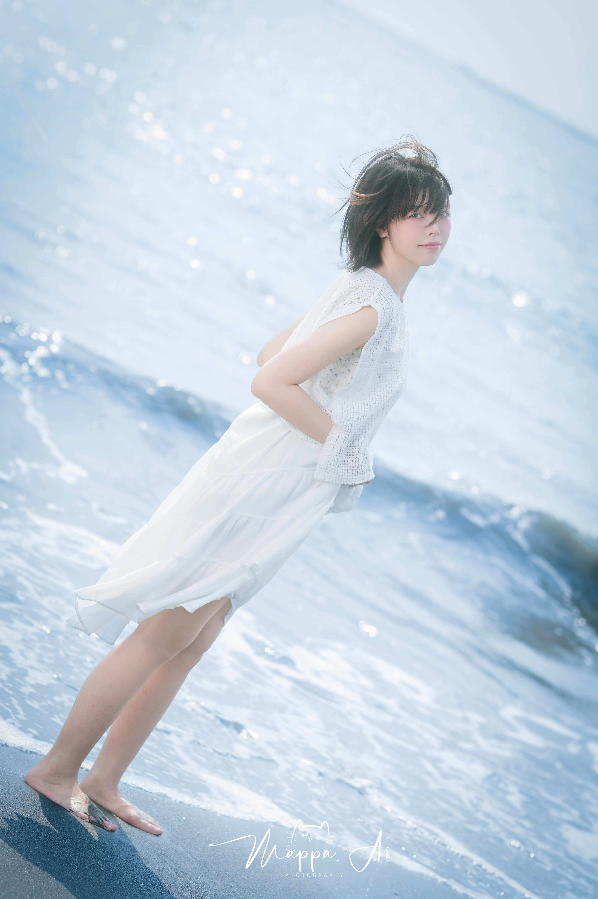
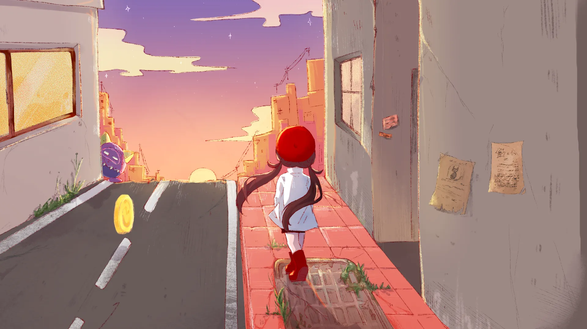
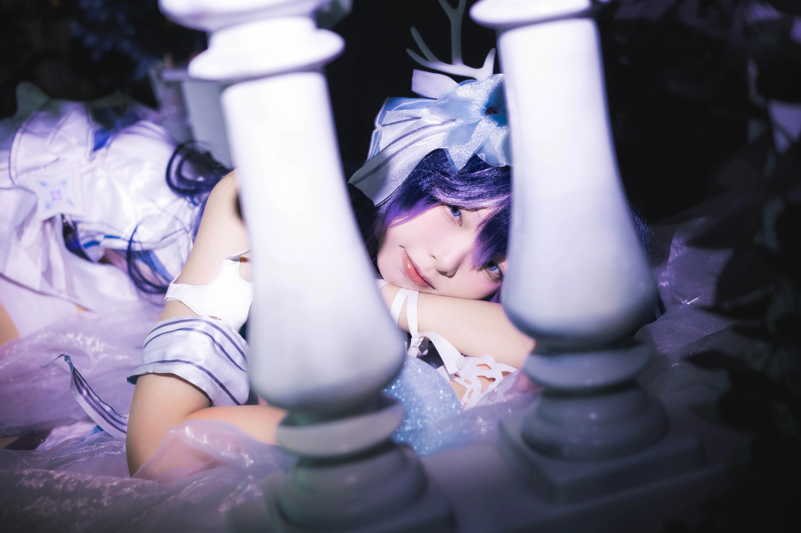

- 關於我 -About Me
✦ 自介

MoJing 沫鯨
( Scroll to read )
暱稱沫鯨，魚缸管理員。
INTP人，南台科大多樂系在讀。
由 50% 的畫圖 、 30% 的打Code 、 20% 的角色扮演所組成。
✦ 技能
- > Unity 遊戲開發 / C# / DOTween / ShaderGraph
- > 2D美術
- > Cosplay
✦ 經歷與證照
證照
- > 2025-Unity Certified User:Artist
- > 2023-Adobe Photoshop CC
- > 2026 | 資料結構課 | 教學助理
- > 2025 | 資料結構課 | 身心障礙學生課後輔導小老師
- > 2025 | 資料結構課 | 教學助理
- > 2024 | 基礎程式課 | 教學助理
✦ 得獎紀錄
- > 2025金犢獎 | 網路互動組 | 入圍 | 《任務代碼:M》
- > 2025巴哈姆特ACG創作大賽 | 遊戲組 | 入圍 | 《午月Convallis》
- > 2025放視大賞 | PC與遊戲主機組 | 複選入圍 |《午月Convallis》
- > 2024巴哈姆特ACG創作大賽 | 遊戲組 | 入圍 | 《時光迷走TimeStroll》
- > 2024放視大賞 | 遊戲商業Pitch舞台 | 最佳潛力獎 |《時光迷走TimeStroll》



